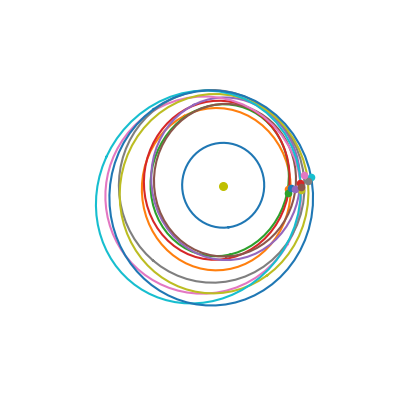

import pykep as pk
import numpy as np
import heyoka as hy
import pygmo as pg
import pygmo_plugins_nonfree as ppnf
when = pk.epoch(64328, pk.core.epoch.julian_type.MJD)
raw_data = np.loadtxt("GTOC12_Asteroids_Data.txt", skiprows=1)[:,2:]
raw_data[:,2:]*=pk.DEG2RAD
raw_data[:,0]*=pk.AU
earth = pk.planet(pk.udpla.keplerian(pk.epoch(64328, pk.epoch.julian_type.MJD),
(1.49579151285E8*1000, 1.65519129162E-2, 4.64389155500E-3 * pk.DEG2RAD,
1.98956406477e2 * pk.DEG2RAD, 2.62960364700e2 * pk.DEG2RAD, 3.58039899470e2 * pk.DEG2RAD),
pk.MU_SUN,
"earth", el_type=pk.el_type.KEP_M))
gtoc12_asts = [earth]
for i, elements in enumerate(raw_data):
gtoc12_asts.append(pk.planet(pk.udpla.keplerian(when, elements, pk.MU_SUN, "gtoc12 ast-"+str(i+1), el_type=pk.el_type.KEP_M)))
The Orbital Metric#
# We check what asteroids are close to each other at epoch mjd2000 = 5500
when = pk.epoch(5500)
tof_days = 200
knn_instance = pk.knn(gtoc12_asts, when, tof=tof_days)
# And find the closest 5 neighbours to the asteroid with id=24
ast_id_ref = 24
neighbours_names, neighbours_idxs, neighbours_dists = knn_instance.find_neighbours(ast_id_ref, k = 10)
ax = pk.plot.make_3Daxis(figsize=(5,5))
pk.plot.add_sun(ax)
pk.plot.add_planet_orbit(ax, earth)
for id in neighbours_idxs:
pk.plot.add_planet_orbit(ax, gtoc12_asts[id])
pk.plot.add_planet(ax, gtoc12_asts[id], when)
ax.view_init(90,90)
ax.axis('off');

Clearly the neighbours found are approximately well phased asteroids that can be considered for a transfer (a hop). The above computation is extremely quick to make, so that for the asteroids found we can afford to complexify our trajectory model. For example computing now the transfer Maximum initial mass approximations (which are also computationally light as they require only Lambert arc computations)
The Maximum Initial Mass Approximations - MIMA(s)#
Tmax = 0.6
Isp = 4000
r,v = gtoc12_asts[ast_id_ref].eph(when)
for idx in neighbours_idxs[1:]:
posvel_f = gtoc12_asts[idx].eph(when + tof_days)
l = pk.lambert_problem(r, posvel_f[0], tof = tof_days*pk.DAY2SEC, mu=pk.MU_SUN)
dv1 = [a-b for a,b in zip(l.v0[0],v)]
dv2 = [a-b for a,b in zip(posvel_f[1], l.v1[0])]
mima = pk.mima(dv1, dv2, tof_days*pk.DAY2SEC, Tmax=Tmax, veff = pk.G0 * Isp)[0]
posvel = [r, l.v0[0]]
mima2 = pk.mima2(posvel, dv1, dv2, tof_days*pk.DAY2SEC, Tmax=Tmax, veff = pk.G0 * Isp, mu = pk.MU_SUN)[0]
print(f"idx: {idx}: mima: {mima:.8f}, mima2: {mima2:.8f}")
idx: 56806: mima: 1270.16102850, mima2: 1336.53752329
idx: 21298: mima: 1376.28433396, mima2: 1349.12057368
idx: 11241: mima: 805.84627823, mima2: 764.22499061
idx: 17333: mima: 966.96031125, mima2: 942.28767024
idx: 58382: mima: 899.57118064, mima2: 981.70709084
idx: 9791: mima: 952.07569132, mima2: 939.52952745
idx: 59398: mima: 868.63412492, mima2: 849.81378715
idx: 13156: mima: 892.72968973, mima2: 899.41910901
idx: 55344: mima: 838.49574444, mima2: 808.47917624
Theres a very good correlation between the ranking assembled by the orbital metric and that of the MIMA. Note, though, that the resulting ranking is sensitive to the value set for the time of flight.
for idx in neighbours_idxs[1:]:
mim = pk.trajopt.mim_from_hop(gtoc12_asts[24], gtoc12_asts[idx], when, when + 200, 0.6, 4000*pk.G0)
print(f"idx: {idx}: mim: {mim:.8f}")
******************************************************************************
This program contains Ipopt, a library for large-scale nonlinear optimization.
Ipopt is released as open source code under the Eclipse Public License (EPL).
For more information visit https://github.com/coin-or/Ipopt
******************************************************************************
idx: 56806: mim: 1305.48253109
idx: 21298: mim: 1324.55554950
idx: 11241: mim: 734.44276715
idx: 17333: mim: 918.53379168
idx: 58382: mim: 1042.69839448
idx: 9791: mim: 969.96330438
idx: 59398: mim: 851.56397476
idx: 13156: mim: 888.98946400
idx: 55344: mim: 815.63374142
The minimum transfer time (not approximated)#
# Factory for the pygmo problem.
def prob_factory(ast_id_s, ast_id_t, T_max, tof_guess, when):
udp = pk.trajopt.pontryagin_cartesian_time(
source= gtoc12_asts[ast_id_s],
target= gtoc12_asts[ast_id_t],
tof_guess=tof_guess,
t0 = when,
T_max=T_max,
Isp=3000,
m0=1500,
L=pk.AU,
TIME=pk.YEAR2DAY * pk.DAY2SEC,
MASS=1500,
with_gradient=True,
)
prob = pg.problem(udp)
prob.c_tol = 1e-6
return prob
# Factory for the pygmo algorithm.
def algo_factory(max_iter):
ip = pg.ipopt()
ip.set_integer_option("max_iter", max_iter) # Change the maximum iterations
ip.set_integer_option("print_level", 0) # Makes Ipopt unverbose
ip.set_string_option(
"nlp_scaling_method", "none"
) # Removes any scaling made in auto mode
ip.set_string_option(
"mu_strategy", "adaptive"
) # Alternative is to tune the initial mu value
return pg.algorithm(ip)
masses = []
times = []
xs = []
for idx_t in neighbours_idxs[1:]:
prob = prob_factory(24, idx_t, 0.6, 250, when)
algo = algo_factory(100)
udp = prob.extract(pk.trajopt.pontryagin_cartesian_time)
for i in range(100):
pop = pg.population(prob, 1)
pop = algo.evolve(pop)
if prob.feasibility_f(pop.champion_f):
udp.fitness(pop.champion_x)
masses.append(udp.ta.state[6])
times.append(pop.champion_x[-1]*udp.TIME*pk.SEC2DAY)
break
else:
print("x", end="")
print(f"idx: {idx_t}: minumum time: {times[-1]:.2f}, mass: {masses[-1]*udp.MASS:.2f}")
idx: 56806: minumum time: 228.61, mass: 1097.18
idx: 21298: minumum time: 219.98, mass: 1112.37
x
idx: 11241: minumum time: 355.47, mass: 873.63
idx: 17333: minumum time: 285.46, mass: 997.00
idx: 58382: minumum time: 236.69, mass: 1082.94
idx: 9791: minumum time: 247.80, mass: 1063.37
xidx: 59398: minumum time: 276.69, mass: 1012.46
idx: 13156: minumum time: 282.90, mass: 1001.51
idx: 55344: minumum time: 292.73, mass: 984.18